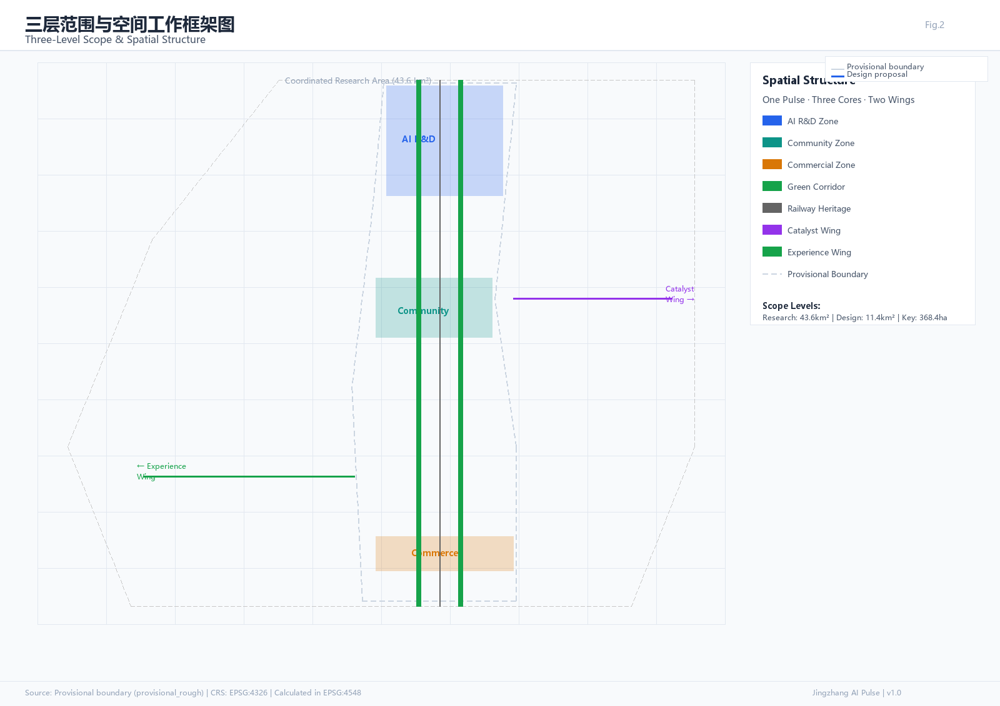
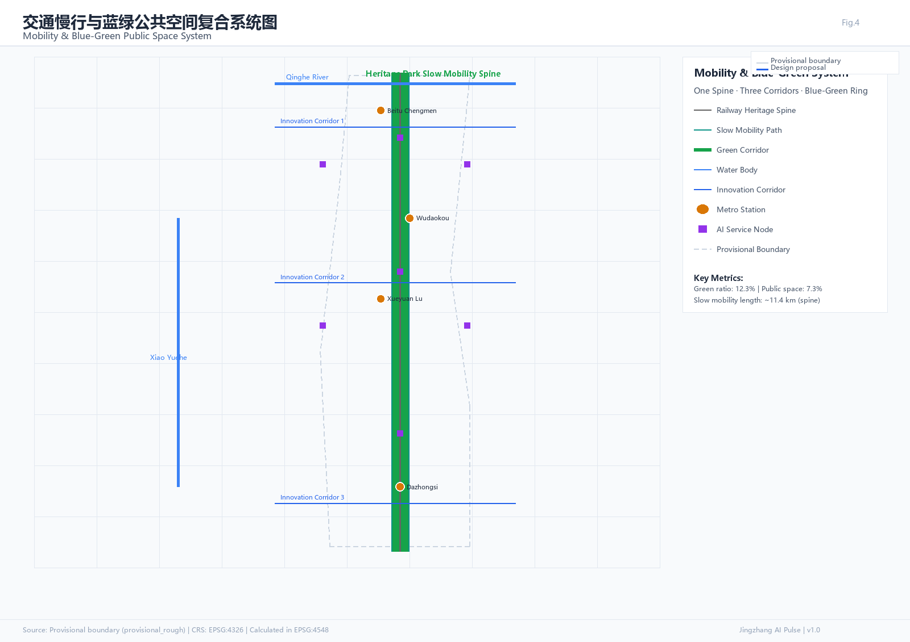

Jingzhang AI Pulse · 智脉京张
Overview Map 总览地图
The overview map combines land use zoning, mobility & slow-traffic, blue-green public space, buildings & renewal projects, and AI scenario nodes in a single evidence-based diagram. Three-level scope (coordinated research area 43.6km², overall design area 11.4km², key detailed design area 368.4ha) and three key areas are annotated.


Land Use Zoning 用地分区
Based on national territorial spatial survey, planning, and use control classification standards, the overall design area is divided into the following zones. All zones are conceptual suggestions subject to formal regulatory planning.
Buildings 建筑
Building proposals distinguish four categories: retention, renovation, renewal, and new construction. Without existing building ownership and regulatory conditions, only method frameworks and calibration checklists are proposed. Total building footprint ~310,800 m² (computed from buildings.geojson).
Renewal Projects 更新项目
Renewal projects proceed in three phases. All spatial proposals are conceptual suggestions, reference schemes, or material for professional teams to deepen — they do not replace formal planning.
- Phase 1 2026-2028Jingzhang Railway Heritage Park (North) AI scenario implantation: AR temporal narrative, AI sports park, distributed energy testing
- Phase 1 2026-2028Zhongguancun AI Acceleration · research building function fine-tuning: open labs, AI creative workspaces
- Phase 2 2028-2030Dazhongsi AI Cluster · commercial iteration: AI-native retail, AI generative art exhibition
- Phase 2 2028-2030AI Origin Community · old community micro-renewal: AI neighborhood butler, health monitoring, education lab
- Phase 3 2030-2035Pulse Tower and surrounding AI landmark cluster (pending regulatory conditions and ownership)
- Phase 3 2030-2035District-wide AI urban perception & emergency response system, AI governance sandbox
AI Scenarios AI 场景
8 AI scenario cards, including 3 industrial test scenarios (orange border), covering AI+Industry, AI+Community, AI+Tourism, and AI+Governance.
AI Signal & Autonomous Driving Test
AI Community Health Station
AI Personalized Education Lab
AI Native Retail Experience
AI Urban Perception & Emergency
AI Creative Workspace
AI Distributed Energy Dispatch
Jingzhang Railway AR Narrative
Core Figures 核心图件



Agent Task Coverage 任务覆盖
| Task ID | Task Name | Key Outputs | Status |
|---|---|---|---|
| agent.1 | Overall Concept & Functional Coordination | Naming system, logo direction, three-zone synergy loop | Complete |
| agent.2 | AI Innovation Ecosystem Design | 8 global cases, ecosystem map, industry-space mapping | Complete |
| agent.3 | AI+ Scenario & Vitality City | 8 scenario cards, 3 test scenarios, 6 user personas | Complete |
| agent.4 | AI Public Space & Landmarks | 3 AI pilgrimage landmarks, honor system, public space components | Complete |
| agent.5 | Cultural Narrative Design | Jingzhang+Zhongguancun+AI three-act narrative, wayfinding | Complete |
| agent.6 | Global AI Events & Operations | Annual event system, developer community, investment path | Complete |
AI Pilgrimage Landmarks AI朝圣地标
Pulse Tower 智脉塔
Data visualization landmark
Conceptual height 45-60m
Zhan Tianyou AI Memorial Plaza
Herringbone paving + AI interaction
Open plaza design
Open Source Honor Wall
Agent & developer contributions
Engraving + digital screen
Self-Check Status 自检状态
Provisional boundaries are used for AI generation, visualization, and self-check; official redline boundaries must be substituted before professional scoring. Planning controls (FAR, height, density, green ratio, setbacks) are missing and pending formal regulatory plan release.
Sources Evidence Chain & Sources 来源
- Official Announcement [source:OFFICIAL-ANNOUNCEMENT]A0 · Formal-ready
- Agent Taskbook [source:AGENT-TASKBOOK]Cleared · Formal-ready
- Provisional BoundaryProvisional · Intake only
- Urban Design Measures [standard:URBAN-DESIGN-MEASURES]A0 · Formal-ready
- Regulatory Planning Measures [standard:REGULATORY-PLANNING-MEASURES]A0 · Formal-ready
- Land Use Classification [standard:LAND-USE-CLASSIFICATION]A0 · Formal-ready
- Planning ControlsMissing · Pending
Key Assumptions 假设
- A-CONTROLS-001: Planning controls (FAR, height, density, green ratio, setbacks) are all missingPending
- A-BOUNDARY-001: Using provisional boundary; recalculation needed after replacing with official polygonProvisional
- A-SCENARIO-001: All AI scenarios are conceptual; privacy boundaries and human review mechanisms need refinement at implementationConcept